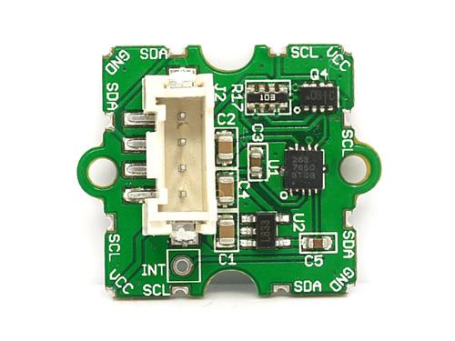
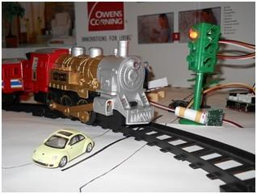
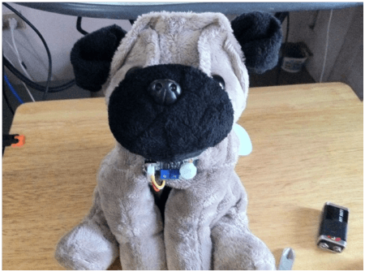
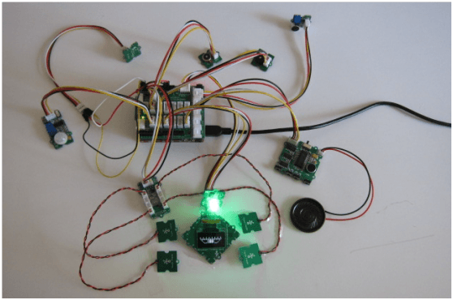

Grove Toy Kit provides an easy way for you to hack and upgrade toys to fit with your own personality. It boosts regular toys with many cool functions like sense of human motion, listening ability, movement detection, OLED display, and more. Thanks for the players of Toy hacking contest, there’re six awesome projects listed below that shows you what you can do with the Grove Toy Kit.
Grove Toy Kit includes:
To make your toy sensitive, we have prepared some sensors for you in this Kit.
How about make your toy say "hello" when you get close to it? With the PIR sensor, your toy can detect human beings when they move into the sensor's detection range. You can adjust your toy's detection range and hold time by adjusting the two potentiometers.
With the Sound sensor, your toy can be sensitive to the environment noise. Grove - Sound Sensor is a simple microphone. Based on the power amplifier LM386 and the electret microphone, it can be used to detect the sound strength of the environment. The value of output can be adjusted by the potentiometer.
With the I2C 3-axis Accelerometer, your toy can now detect its acceleration; that is, if your kid shakes his/her doll heavily, the doll may say: "Hey, kiddo! You are stronger than the last time you shook me!

An I2C Touch Sensor has been used to make your toy (ie Winnie The Pooh) sensitive to your finger's touch. It includes a controller and 4 feelers, which enables your toy to feel the touch or proximity of human fingers with 4 channels. Besides, up to 4 additional channels can be added if you make or buy the feelers from Seeed Studio.
LED 128×64 Display module is an OLED monochrome 128×64dot matrix display module with Grove 4pin I2C Interface. The characteristics of this display module are high brightness, self-emission, high contrast ratio, slim outline, wide viewing angle, wide temperature range, and low power consumption. It has bigger screen and uses all the columns from the SSD1308 chip so that it can display more contents than the OLED 96×16. This very cool OLED Display with Grove 4pin I2C Interface, is high brightness, self-emission, high contrast ratio, slim outline, wide viewing angle, wide temperature range, and low power consumption. It is rather splendid to Integrate it into your toy, or any things you like.
This Variable Color LED is consist of one 8mm RGB LED and 3 potentiometers. You can get any color you like through adjusting the 3 potentiometers and control LED on and off. Now, change the color of the eyes of Winnie The Pooh as you like and make them blink like the stars~!
The sound recorder can be used to record voice and then replay them. It is possible for your toy to remind you kids in your voice:" hi,sweet,it is time to go bed"
But sorry to tell you that the chip of Sound Recorder has ceased production, so we do NOT put it into Toy Kit's packlist. Seeed RandD Team is trying to find the other chip which can get Sound Recorder back to work, We won't let you wait too long!
This Piezo_Buzzer can be connected to an analog pulse-width modulation output to generate various tones and effects.
The Toy kit work with the Arduino or Seeeduinoboard,and the Grove Shield series
Here are some Application Examples designed by Seeed customers.
This project is about an automated railway system. The basic idea is to use the Grove Toy Kit to determine the time, to play the corresponding sound when a train reaches the station, and to know when the train reaches the crossover.

If you want to go for this project, you may still need to have:
Resources:
The Barking Desk Guard Dog will bark at anyone who will try to move the object in front of it. You can place it on your desktop when you are not around and when someone comes near your place (maybe in your work) then it will alert all your colleagues when that someone tries to take something from your desk.

If you want to go for this project, you may still need to have:
Resources:
This project is about modifying an IKEA lamp. The common product turns into a Robot Lamp and has more fun through adding sensors, lights, sound and movement into it.
[[Image:IKEA Robot Lamp.jpg}550px]]
If you want to go for this project, you may still need to have:
Resources:
When walking through Shanghai, there is one thing you will see in many shops, restaurants and other places: the Maneki Neko, also known as the beckoning cat. Most of them have a mechanism, which lets one of their arms (usually the left one) move back and forth endlessly. This project basically is to modify its moving arm with Grove components.
If you want to go for this project, you may still need to have:
Resources:
This project is to re-purpose a remote control car that you can easily find in a thrift store into an Arduino-controlled robot using Seeed Studio's Grove Toy kit.
If you want to go for this project, you may still need to have:
Resources:
The Eyeclop is a project that demonstrates the use of touch sensors to change the shape of the eye as well as blink an RGB LED, play sound melody, and vibrate itself. The Eyeclop is a sensitive one-eye Cyclop, and is shown on a monochrome OLED 128x64 pixel screen. The touch sensors, the RGB LED, and other electronic components are all part of the Grove Toy Kit that is created by Seeed Studio.

If you want to go for this project, you may still need to have:
Resources:
Please list your question here:
If you have questions or other better design ideas, you can go to our forum or wish to discuss.
| Revision | Descriptions | Release |
|---|---|---|
| GROVE - Toy Kit | the V0.9b revision published | Nov 23, 2011 |
Bug Tracker is the place you can publish any bugs you think you might have found during use. Please write down what you have to say, your answers will help us improve our products.
The Additional Idea is the place to write your project ideas about this product, or other usages you've found. Or you can write them on Projects page.
Please click here to buy Grove - Toy Kit: http://www.seeedstudio.com/depot/grove-toy-kit-p-1028.html?cPath=138.
This documentation is licensed under the Creative Commons Attribution-ShareAlike License 3.0 Source code and libraries are licensed under GPL/LGPL, see source code files for details.
Links to external webpages which provide more application ideas, documents/datasheet or software libraries
Copyright (c) 2008-2016 Seeed Development Limited (www.seeedstudio.com / www.seeed.cc)